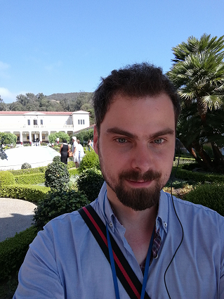

hi, this is me:
David Nohejl
I am based in Prague, Czech Republic, and I consider myself:
Enterpreneur
In 2021, my friend and I launched Tickerverse - Event-Driven Market Intelligence
Tickerverse is a tool for investors to keep up with corporate events, like changes of CEO, mergers, bankrupcies, etc., and look for new investment opportunities.
Investor
I am investing mainly in early/mid stage biotechnological companies. I like RNA therapeutics, specifically RNAi. And miRNA. Also CRISPR. And synthetic biology. I am planning to invest into space exploration/mining and quantum computing as well. Happy to discuss investments on Twitter, where I also post most of my trades.
Scientist
I have earned BSc in computer science from faculty of Mathematics and physics at Charles University of Prague in 2013.
Currently (2021) I am finishing Masters studies in Bioinformatics at faculty of Science also at Charles University. My masters thesis topic is analysis and comparison of methods that computationally predict pathogenicity of mutations in breast cancer susceptibility genes (BRCA1/2, PALB2, CHEK2, etc). In short, I am looking at algorithms which guess from your DNA mutations how likely and when you are to get herediary cancer.
You can see some of sciency stuff on my github. I thought Predicting Compound involvement in pathway was quite cool.
Publications
- NOHEJL, David. Vývojové stromy. 2012. Bakalářská práce. Univerzita Karlova, Matematicko-fyzikální fakulta, Katedra aplikované matematiky. Vedoucí práce Pangrác, Ondřej. (my BSc thesis)
- Multi-agent path finding on real robots: First experience with ozobots R Barták, J Švancara, V Škopková, D Nohejl Ibero-American Conference on Artificial Intelligence, 290-301
- Multi-agent path finding on real robots R Barták, J Švancara, V Škopková, D Nohejl, I Krasičenko AI Communications 32 (3), 175-189
Software Developer
Mainy C# Developer with over 10 years of experience. Between 2014-2021 I was working for Absa Capital, leading corporate and investment bank in and for Africa. Was part of few teams, but mainly working on Illuminations, a regulatory reporting solution which was nominated for banking technology award in 2018.
In June 2022 I've joined MSD to work on modernizing and migrating apps to cloud.